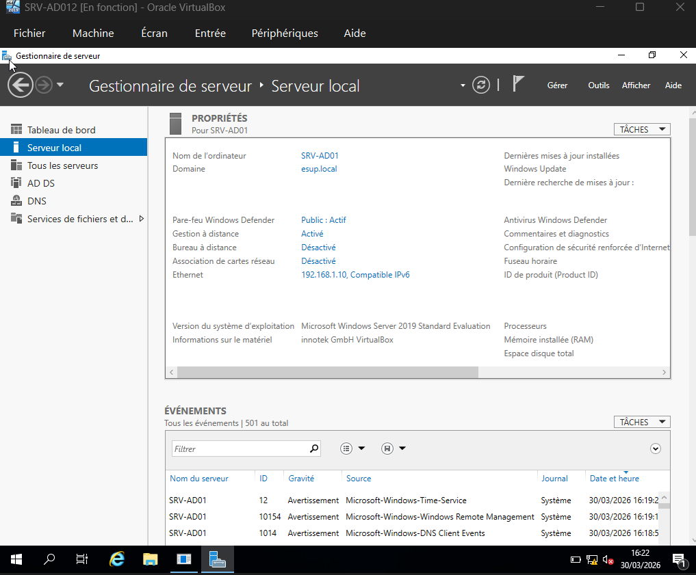
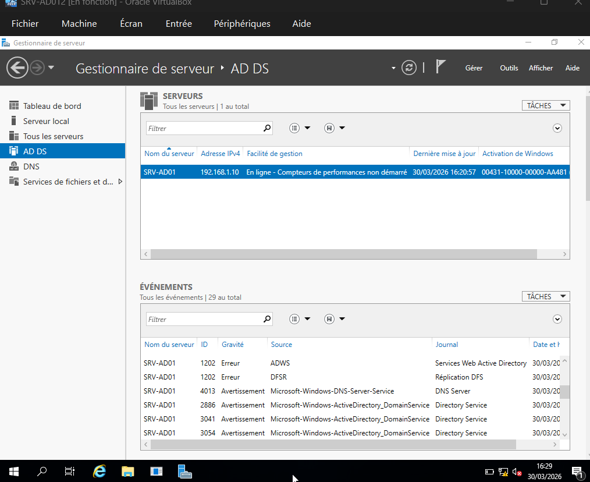
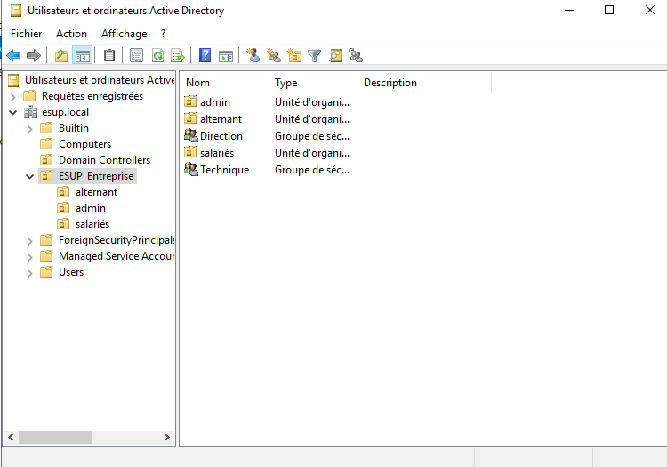
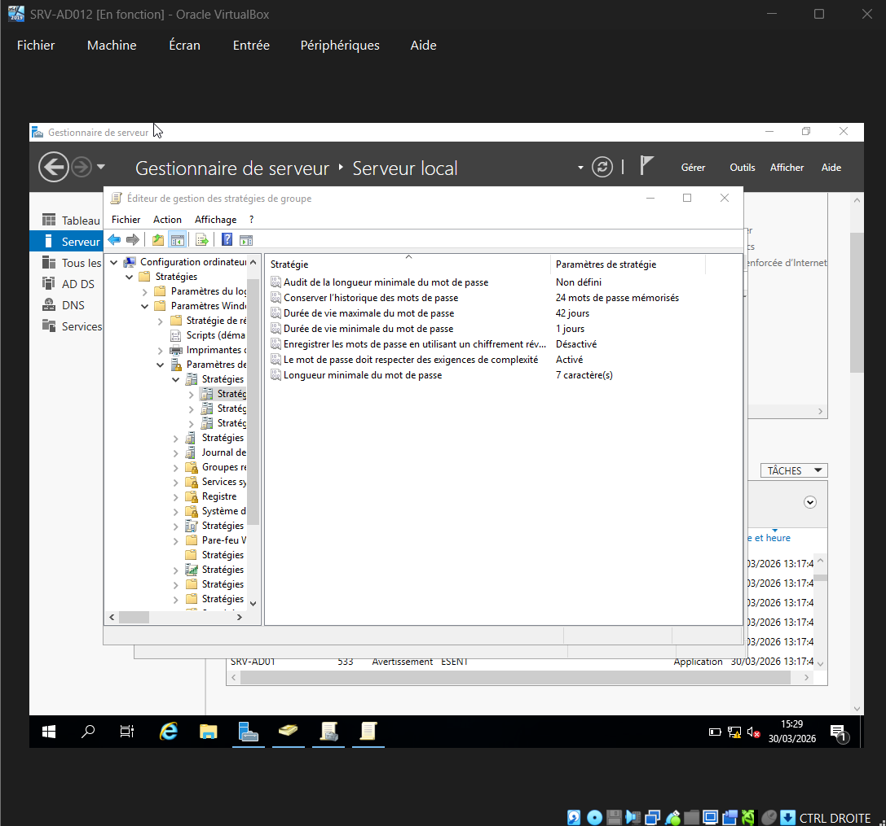
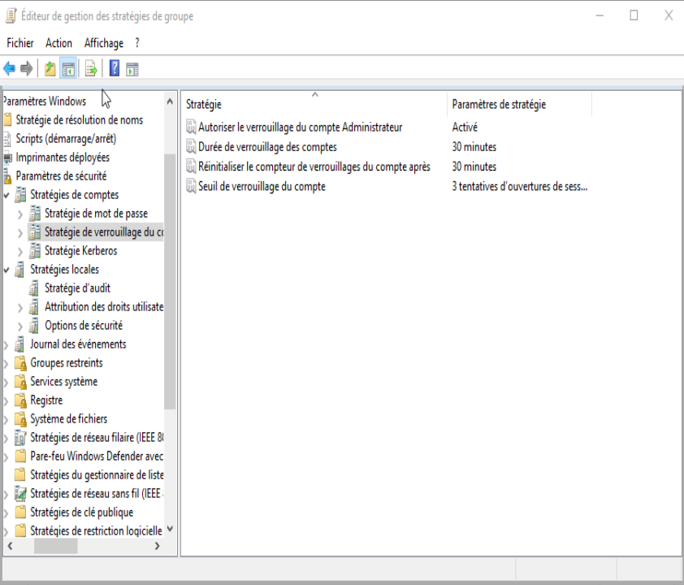
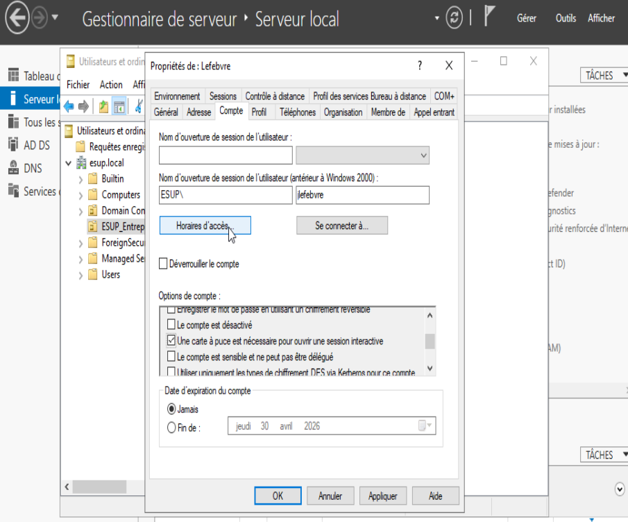
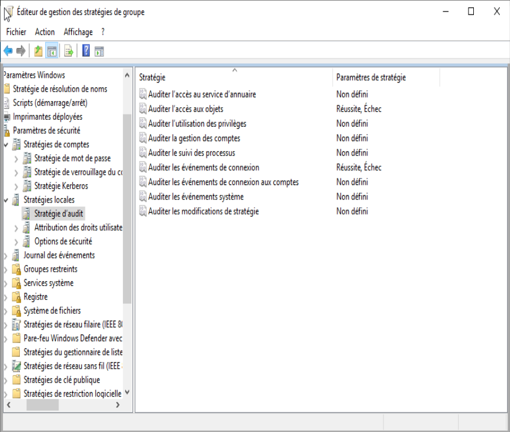
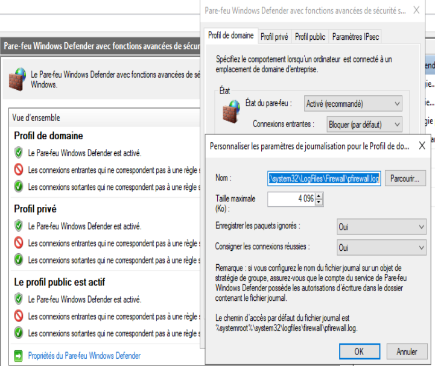

Déploiement et sécurisation d'un domaine Windows Server 2019
Aness Khenichil · BTS SIO option SISR · ESUP Paris
Une ESN fictive veut centraliser la gestion de ses utilisateurs et sécuriser l'accès à son système d'information.
Le projet est réalisé sur une machine virtuelle VirtualBox.

SRV-AD01192.168.1.10Une adresse fixe est indispensable : les postes du domaine doivent toujours trouver leur contrôleur et leur serveur DNS.
esup.localLe serveur apparaît en ligne dans la console AD DS du Gestionnaire de serveur.


ESUP_EntrepriseRanger les comptes par OU permet d'appliquer des GPO différentes selon le profil.


Sur le compte de Lefebvre, l'option « Une carte à puce est nécessaire pour ouvrir une session interactive » est activée.
Le mot de passe seul ne suffit plus : il faut aussi posséder la carte. Une mesure à réserver aux comptes sensibles.


Chaque tentative est enregistrée dans le journal Sécurité de l'Observateur d'événements : on peut repérer une attaque par force brute.
pfirewall.log, 4 096 Ko maximumLes journaux servent ensuite à analyser les flux et à détecter les comportements anormaux.

esup.local opérationnelesup.local